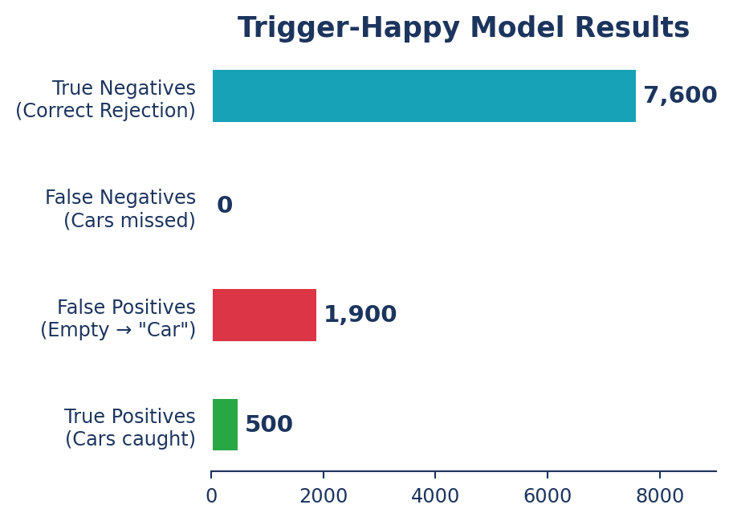
Accuracy : 0.80
Precision: 0.75
Recall : 0.75Evaluation & Deployment
2026-04-05
How good is your model?
Every prediction falls into one of four categories. Example: detecting a “Car”
| Predicted: Car | Predicted: Not Car | |
|---|---|---|
| Actual: Car | ✅ True Positive Correct detection |
❌ False Negative Missed car |
| Actual: Not Car | ⚠️ False Positive False alarm |
✅ True Negative Correct rejection |

Accuracy : 0.80
Precision: 0.75
Recall : 0.75
Matrix Layout:
A camera at a parking entrance classifies each frame as Car Present or Not:
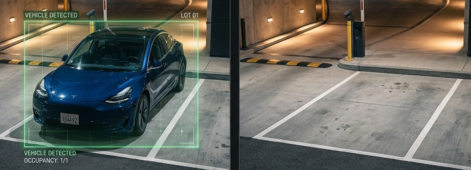
Dataset: 24 hours, 10,000 frames (~9s interval)
| Count | % | |
|---|---|---|
| Car Present | 500 | 5% |
| Empty Spot | 9,500 | 95% |
Most of the time, the spot is empty.
A “lazy” model that always predicts “Empty”:
\[Accuracy = \frac{9{,}500}{10{,}000} = 95\%\]
95% Accuracy — yet it never detects a single car. This is the Class Imbalance Problem.
Instead of overall accuracy, we average the per-class accuracies so each class counts equally.
Applied to our “Lazy” Model:
Balanced Accuracy correctly flags the lazy model as a failure, even though its “standard” accuracy was 95%!
What if our model catches every car, but is “trigger-happy”?
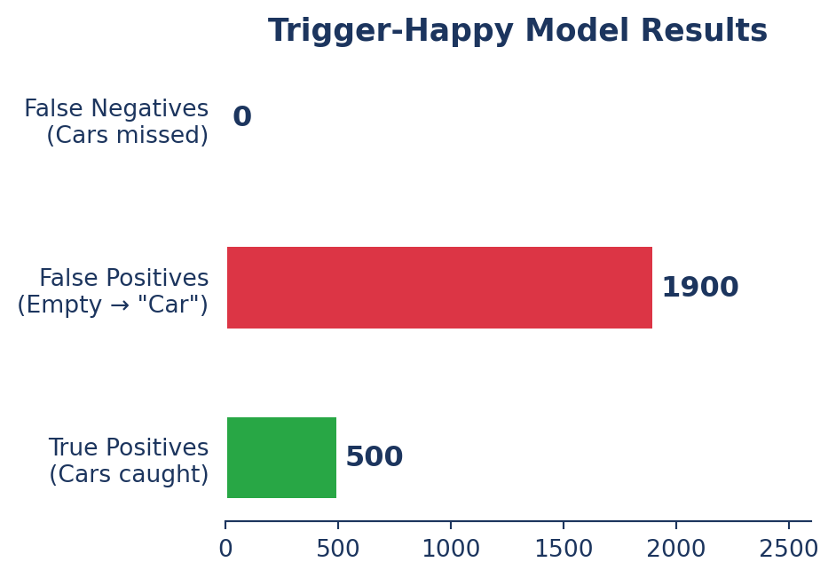
\[\frac{100\% + 80\%}{2} = \mathbf{90\%}\]
90% looks great — but that’s 1,900 false alarms hidden inside the score.
Two metrics that ignore True Negatives entirely (correctly classified Empty spot):
We have 500 actual cars. How would these two models handle them?
Flags everything — never misses a car
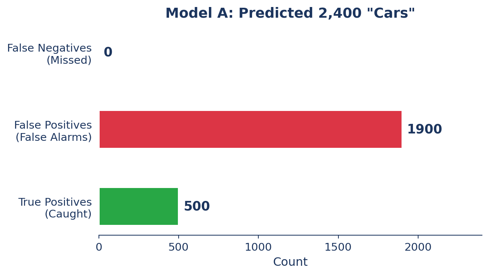
Only flags when very confident

The Model outputs scores, not decisions:
“I am 72% sure this is a car.”
We decide the label:
top1)Raising or lowering your confidence threshold shifts the balance:
0.80)Strict — only “sure bets” pass
↑ Precision (fewer false alarms)
↓ Recall (more misses)
0.20)Loose — catch everything
↑ Recall (fewer misses)
↓ Precision (more false alarms)
Which single number combines both?
\[F_1 = 2 \times \frac{Precision \times Recall}{Precision + Recall}\]
A 0 in either metric drags the whole score down — you can’t hide behind one strong number.
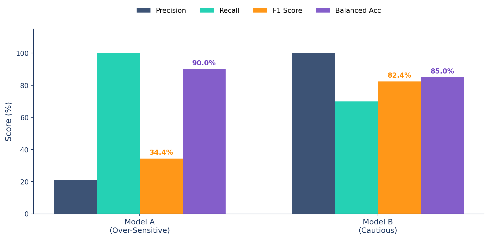
F1 exposes Model A’s flaw: 1,900 false alarms inflate Recall but tank Precision — F1 = 34.4%.
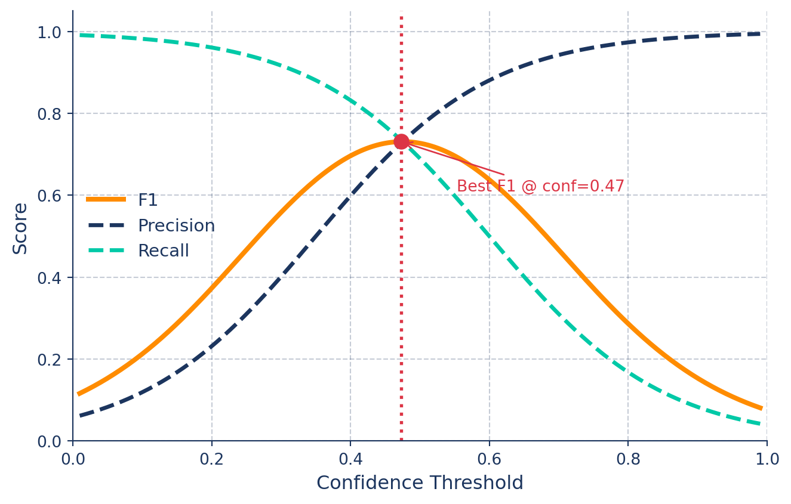
Ultralytics saves F1_curve.png and R_curve.png in your training results automatically.
Step 1: Gather We take every “Car” prediction the model made across the whole test set.
Step 2: Sort We sort them from highest confidence (e.g., \(0.99\)) to lowest (e.g., \(0.10\)).
Step 3: Calculate We calculate Precision and Recall at every single step of that sorted list.
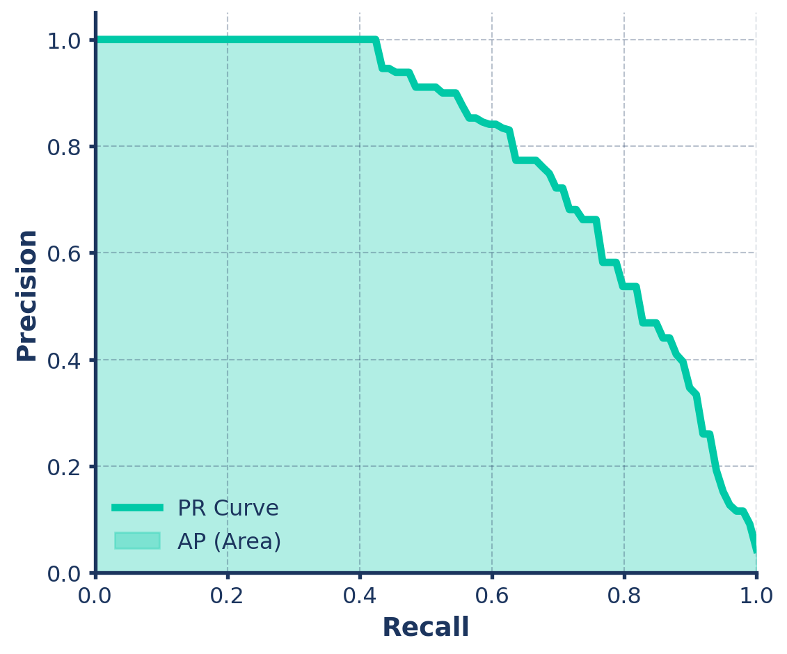
Average Precision (AP) is simply the area under this Precision-Recall (PR) curve!
Precision and Recall measure whether a classification is correct.
For object detection, the model must also get the location right.
A confident prediction placed in the wrong spot is still a wrong prediction.
That’s where Intersection over Union (IoU) comes in.
How perfectly does the predicted bounding box overlap the ground truth box?
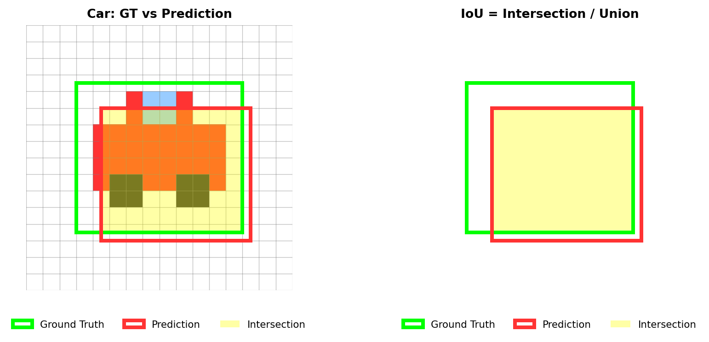
Rule of Thumb: A prediction is typically considered a “True Positive” (correct) if the IoU is > 0.50.
A prediction must be accurate in location (\(IoU \ge 0.5\)) to count as a True Positive (TP).
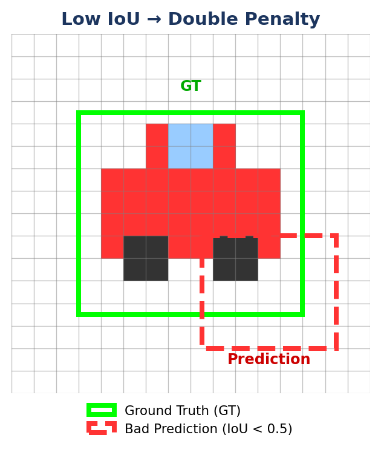
What happens when \(IoU < 0.5\)?
It hurts your score twice:
One poor prediction = penalised as both an extra detection and a missed object.
A common question is: “What if the model predicts multiple boxes for the exact same object?”
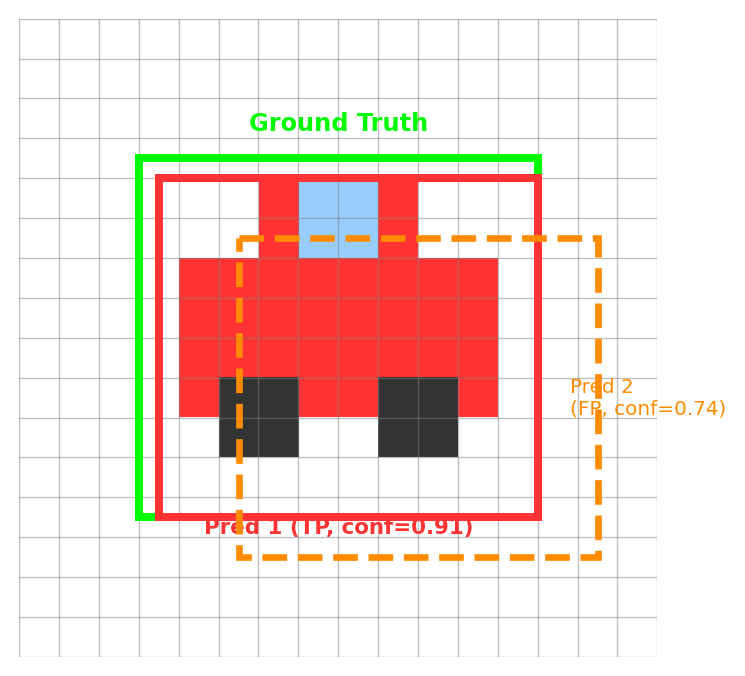
Rule: One Ground Truth = Only One TP
Once we have the AP for every class (Cars, Pedestrians, Trees, etc.), we simply take the arithmetic mean.
\[mAP = \frac{AP_{cars} + AP_{pedestrians} + AP_{trees} + ...}{Total\ Number\ of\ Classes}\]
We use the val mode to evaluate a trained model. YOLO automatically generates graphs (confusion_matrix.png, PR_curve.png) in your runs/detect/val folder.
Docs Reference: Model Evaluation Insights
val()When you run model.val(), you get a metrics object with all the key numbers:
from ultralytics import YOLO
model = YOLO("best.pt")
metrics = model.val(data="data.yaml")
# Key metrics to access:
print(f"mAP@0.5: {metrics.box.map50}") # Generous IoU threshold
print(f"mAP@0.5:95 {metrics.box.map}") # Strict across 10 IoU thresholds
print(f"Precision: {metrics.box.mp}") # Overall precision
print(f"Recall: {metrics.box.mr}") # Overall recallDocs Reference: Validation Results
You can now read your validation results — but what do you do when the numbers look bad?
The most common culprits are:
Let’s go through each one.
How do we stop the model from ignoring rare classes during training?
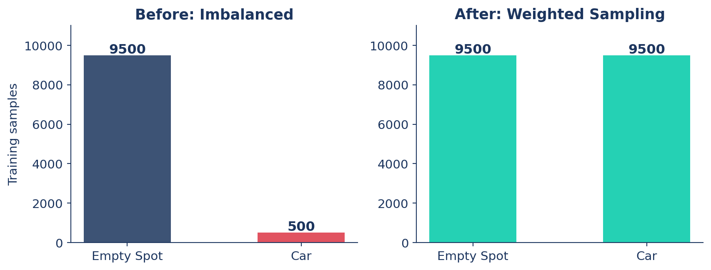
Here we oversample (duplicating images) the minority class (car) to make it learnable.
Technical Guide: Class Balancing with YOLO
Every training run lands somewhere on this spectrum — knowing where is the first step to fixing it.
🔴 Overfitting
Model memorizes training data.
Too much capacity for your data
🟢 Just Right
Model generalizes to new data.
The goal — stay here
🟠 Underfitting
Model never learned the patterns.
Too little capacity or training
The model memorizes training data instead of learning general patterns.
What you see:
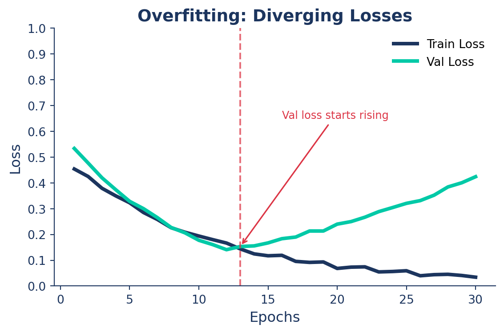
More Data Variety (best cure)
Varied scenes the model can’t memorize.
Augmentation
Flip, mosaic, color jitter — on by default in YOLO.
Smaller Model
Small dataset? Start with yolo11n or yolo11s.
Tip
Start with augmentation + patience. If overfitting persists, raise weight_decay.
The model hasn’t learned the patterns — too simple, over-constrained, or undertrained.
What you see:

The Ideal State:

Use this as a reference when reading your own loss curves.
| What you see | Problem | Actions |
|---|---|---|
| Train mAP >> Val mAP, Val loss rising | 🔴 Overfitting | Add augmentation · increase weight_decay · set patience |
| Both mAP low and flat, loss barely moves | 🟠 Underfitting | Bigger model · more epochs · raise lr0 · lower weight_decay |
| Both losses converging, mAP climbing | 🟢 Healthy | Continue training or deploy |
Tip
Always watch both curves. 99% train accuracy means nothing if val is failing.
You can diagnose the problem — now here are the levers to fix it.
| Tool | Fixes |
|---|---|
| Data Augmentation | Overfitting, small datasets, domain shift |
| Learning Rate | Unstable or stalled training |
| Weight Decay | Overfitting (model memorizing) |
| Early Stopping | Wasted compute, overfitting |
Concept: Artificially increase training data variety by applying transformations to existing images.

When it helps:
YOLO natively supports Albumentations to improve model robustness:
import albumentations as A
from ultralytics import YOLO
model = YOLO("yolo26n.pt")
# Define custom Albumentations transforms
custom_transforms = [
A.Blur(blur_limit=7, p=0.5),
A.RandomCrop(width=256, height=256),
A.HorizontalFlip(p=0.5),
A.RandomBrightnessContrast(brightness_limit=0.2, contrast_limit=0.2, p=0.5),
]
# Train the model with custom transforms
model.train(data="data.yaml", epochs=100, augmentations=custom_transforms)Docs Reference: Albumentations Integration
🔴 Too High: Spikes/noise. Model “jumps” over the optimal solution.
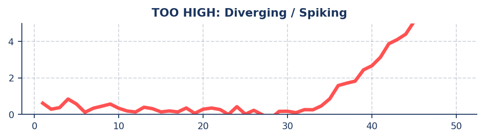
🔵 Too Small: Flat line. Model is too “timid” to learn.
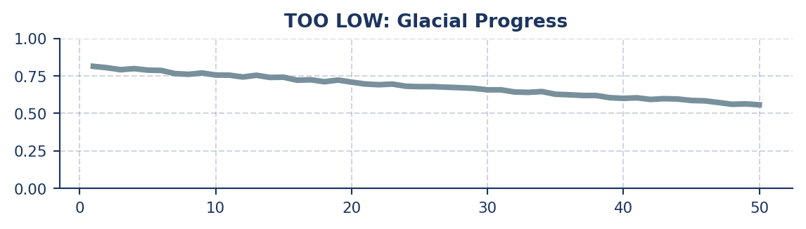
🟢 Just Right: Smooth, rapid decay to a low plateau.
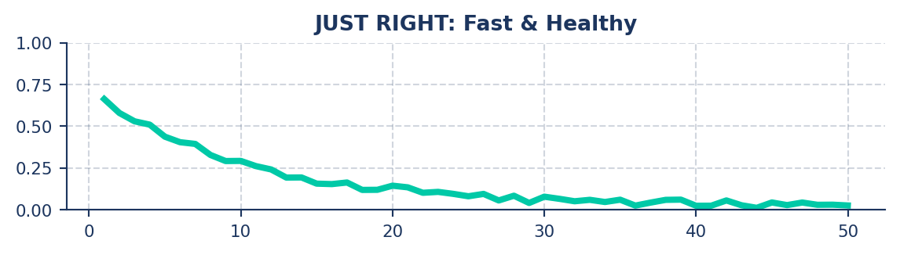
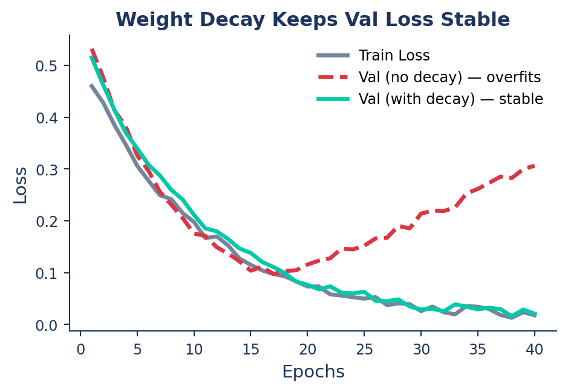
| Setting | Effect |
|---|---|
| Too low | Memorization → 🔴 Overfitting |
| Too high | Over-constrained → 🟠 Underfitting |
When your model’s validation metrics are solid, it’s ready for the next step — getting it into production.
Taking it to production.
A PyTorch .pt file is great for research, but slow in production. Convert to optimized formats using the export mode!
Docs Reference: Export
You don’t need complex deployment code to use your exported models. The Ultralytics API loads them just like a standard PyTorch .pt file!
Docs Reference: Predict with Exported Models
Course Wrap-up
Thank You!
Any questions?